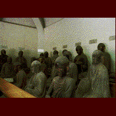

五百羅漢寺/東京都目黒区 
目黒不動に程近い天恩山五百羅漢寺、通称「目黒の羅漢さん」。伝説の珍建築がかつてこの寺には存在していた。そして現在もその姿を変えながらも、やっぱり珍寺なのだ。
この寺、江戸時代には本所にあった。元禄時代につくられた五百羅漢は徳川綱吉、吉宗という徳川2大マッドジェネラル（犬とあばれんぼうですから）に寵愛され繁栄し、庶民の間でもブームになっていく。この本所時代の羅漢寺がズラリと五百羅漢が並ぶ羅漢堂とさざえ堂という二枚看板を持つ珍寺だったのだ。
羅漢堂に関してはその内部の様子が江戸名所図会や歌麿の浮世絵などに記されているのだが、それらを総合すると何とも奇怪なお堂であったようだ。中央に本堂、そしてその両脇にそれぞれ東西の羅漢堂が連結されており、全体の構成としては丁度平等院の鳳凰堂のような格好になっている。そして内部は一方通行の回遊式仏堂となっていた。
さらに何といっても最大の特徴はこの回廊状になっている東西羅漢堂及び本堂の参拝路が2つのルートに別れていたのだ。ひとつはじっくりと参拝したい人用の板張床のルート、そしてもうひとつは急いで回りたい人用の土間のルート。このふたつの参拝路が平行して東西の羅漢堂を走り抜けているのだ。そしてこの参拝路は途中太鼓橋によって立体交差になっており、決して互いにぶつかることが無いよう、つくられていたというのだ。まさに建築におけるメビウスの輪といったところか。そしてこんな構造からは、いかにこの寺が流行り、また江戸っ子がいかにせっかちだったかが良く分かるであろう。
そしてさざえ堂（右繞三匝堂ともいう）。全国に今も幾つか存在するさざえ堂のオリジナルである。こちらも広重や北斎などによって描かれている。それらを見ると三層目にテラスが設けてあるのがさざえ堂としては珍しいように思える。
この羅漢堂とさざえ堂、ともに三代象先和尚のアイデアによるものとされている。恐るべし、象先。
しかしその後、洪水、地震などで没落し、移転を続け明治41年に現在の地に移転してくるのだが、この間日本初のチベット入国者として名高い河口慧海が一瞬住職になったりもしているところがシブい。しかしその後も台風、関東大震災などでもう寺はメロメロ。戦後も依然ぱっとしない状況が長く続く。羅漢寺冬の時代だ。
しかし昭和45年、羅漢像が都の重文指定を受けるあたりから再興の気運が盛り上がり、ついに昭和56年に本堂、羅漢堂が完成し、現在の姿になったという按配。こうして本所から目黒まで100年がかりの五百羅漢民族大移動の旅は終わったのである。羅漢さま、ご苦労様でした。
で、再建された新本堂なのだが、こちらもキッチリと珍寺魂を継承したナイスな寺に仕上がっている。寺とは思えない程モダンな建物なのだが本堂の中に一歩入ればそこはもう羅漢羅漢羅漢の羅漢ラッシュ状態。正面中央の本尊のお釈迦さまを中心にボディーガード状態の菩薩やらが並ぶその両側にズラリと羅漢像が並んでいる。それはまるでお釈迦さまの説法を羅漢達が聞いている様な光景だ。と、思ったら本当に説法が聞こえてきた。テープで説法を流しているのだ。なんというニクイ演出。
数々の災難にあい、現在の羅漢さんの数は約300。本堂に並ぶ羅漢像は約150。で、本堂に納まり切れなかった残りの羅漢像は本堂手前の羅漢堂に安置されている。ここは彼等のヒーローのお釈迦さまがいない分ちょっと寂しそう。独り気を吐くのは腹の中を手で開き「どやっ」と見せてくれる釈迦の息子、羅怙羅。で、結局羅漢さんの大ラッシュにげっそりするのだが、本所の羅漢堂にはこれ以上いてしかもそれ見終わってから百観音、合わせて六百余。江戸の人達はもっと大変だったことだろう。五百羅漢参拝は体力勝負だ。
情報提供はへりおすさんです
1997.9.
珍寺大道場
HOME